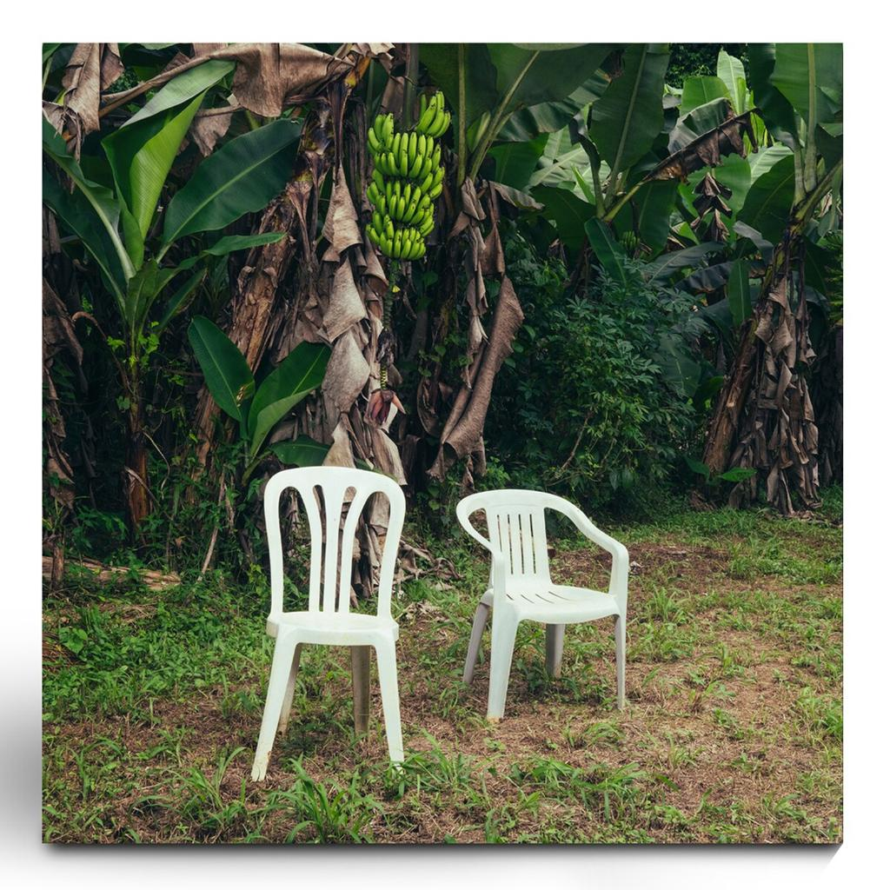
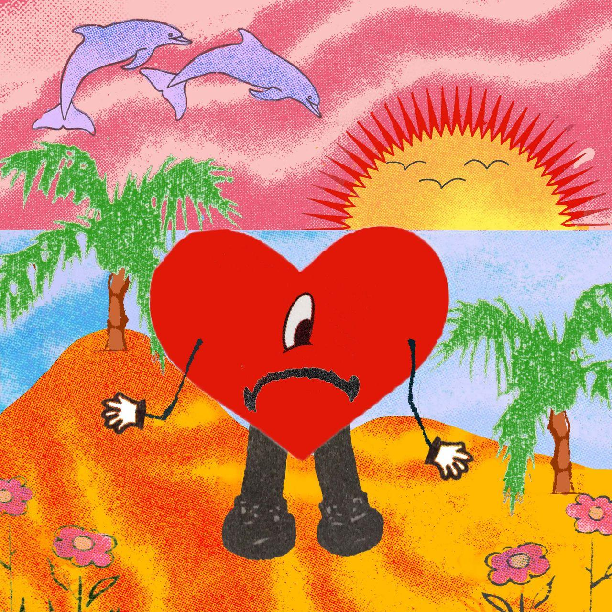
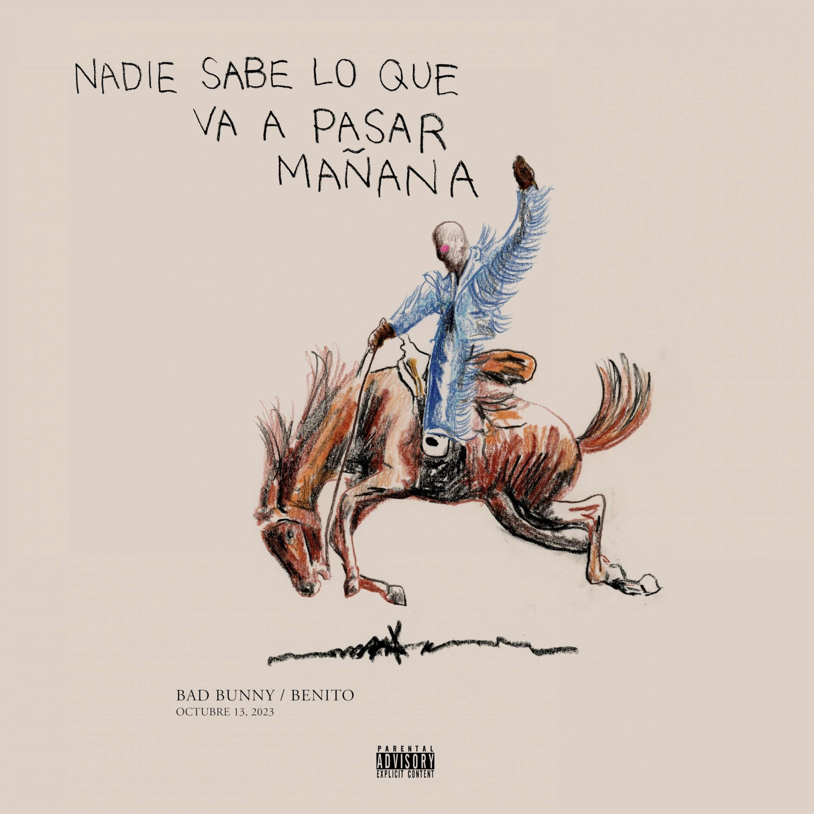
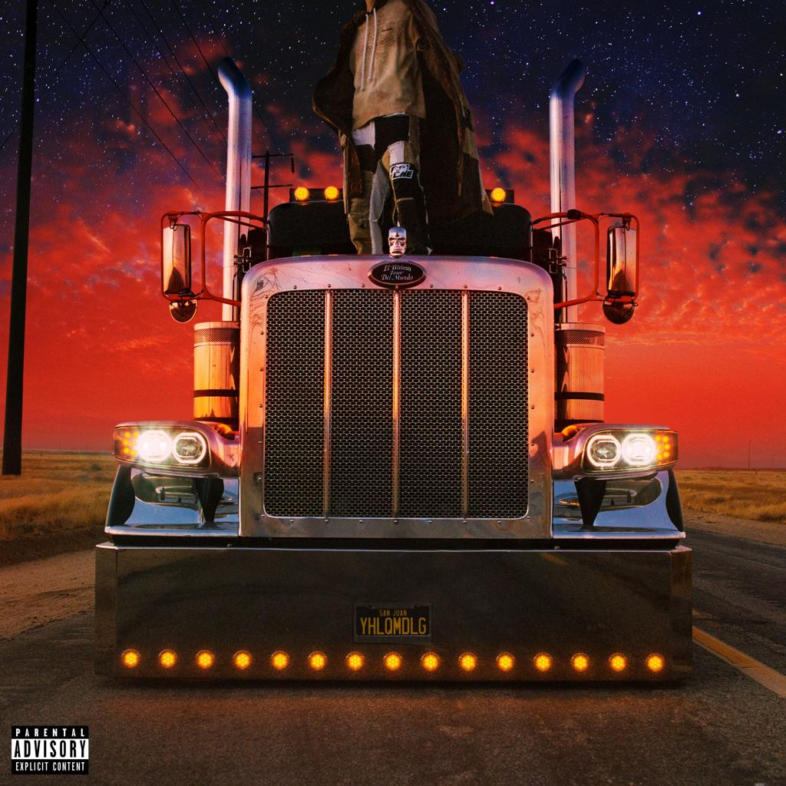

01

Una historia que se escucha, una cultura que se siente. La música del artista que transformó el sonido latino.
DE VEGA BAJA AL MUNDO
Benito Antonio Martínez Ocasio nació el 10 de marzo de 1994 en Puerto Rico y creció en Vega Baja. En 2016 comenzó a llamar la atención con sus canciones compartidas por internet. Con el tiempo se convirtió en una figura internacional del reguetón, el trap latino y la música urbana.
En su obra conviven las fiestas, las relaciones, la nostalgia y un profundo vínculo con la cultura puertorriqueña, que ha incorporado a proyectos como DeBÍ TiRAR MáS FOToS .
Un artista, mil formas de expresarse. Descubre cada faceta del Conejo Malo y amplía tus imágenes favoritas.
Cada imagen se abre en tamaño grande desde tu carpeta local. Cuida los créditos y las licencias de las fotografías elegidas.
Cinco canciones oficiales para explorar. Selecciona una y reproduce el videoclip que guardaste en la carpeta videos/, sin salir de esta página.


Los videos se reproducen desde tu carpeta videos/ con HTML5. Puedes escuchar las canciones mediante Spotify en el reproductor de la derecha.
Archivo seleccionado: videos/video1.mp4
Pulsa reproducir para ver el video desde tu computadora.
Guarda tus videos descargados como video1.mp4, video2.mp4, video3.mp4, video4.mp4 y video5.mp4 dentro de videos/. Para reproducirlos no necesitas internet.
Audio oficial dentro del sitio. Spotify puede limitar la reproducción según tu cuenta o región.
Salsa, plena y sonidos puertorriqueños
El Caribe como protagonista

Urbano y trap experimental
Un clásico del reguetón moderno

Reguetón, rock alternativo y sonidos urbanos
CINCO PISTAS, CINCO HISTORIAS
Selecciona una portada, reproduce el audio y sigue la letra. Son composiciones originales para la práctica y no grabaciones de Bad Bunny.
Descarga disponible solamente para estas cinco pistas originales de práctica. Las grabaciones comerciales de Bad Bunny no se ofrecen para descarga.
Bajo la luz de la tarde,
camino cerca del mar.
La brisa mueve mis sueños,
y me invita a comenzar.
Cada ola tiene un secreto,
cada paso una canción.
Hoy guardo este momento,
muy cerquita del corazón.